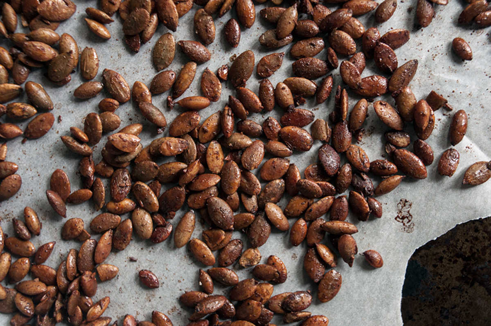

roasted pumpkin seeds
6 servings — 30 minutes
Our favorite way to eat pumpkin seeds, is to roast them with spices, it makes a nice snack or add-on to soups or other meals.
Roasted pumpkin seeds are delicious with almost anything, the sweet of the maple syrup with the spicy taste of the paprika is perfect, it is subtle, but very good.
 pumpkin seeds32 g
pumpkin seeds32 g smoked paprika10 g
smoked paprika10 g cumin seeds10 g
cumin seeds10 g maple syrup5 ml
maple syrup5 ml salt1.25 g
salt1.25 g
pumpkin seeds
- Preheat oven to 150 °C (300 °F).
- Mix 10 g (2 tsp) of smoked paprika, 10 g (2 tsp) of ground cumin, 1.25 g of salt and 5 ml (1 tsp) of maple syrup together. Add 32 g (1/2 cup) of raw pumpkin seeds.
- Line baking sheet with parchment paper, spread seeds out as flat and as apart from each other as you can on the sheet.
- Bake for 20 minutes, at the 10 minute mark stir seeds around and then bake for another 10 minutes.
- Eat as a snack or add as a topping in soups!